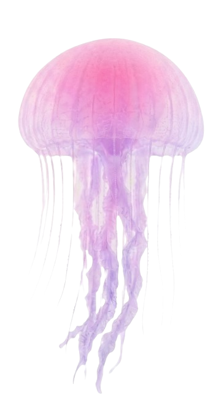

R
Reset
PAUSA Y REINICIA
Vuelve a tu centro cuando la saturación mental no te deje avanzar. Un respiro guiado para reiniciar tu enfoque.
Entrar a Reset
Un espacio creado para tu bienestar, para un segundo y recuerda cuidar de ti.
A veces, avanzar rápido significa saber detenerse.
Despeja el ruido.
Encuentra tu ritmo.

SoftStop te ayuda a reconocer qué te está deteniendo
y elegir el siguiente paso que necesitas.
Funciones diseñadas para tu bienestar
PAUSA Y REINICIA
Vuelve a tu centro cuando la saturación mental no te deje avanzar. Un respiro guiado para reiniciar tu enfoque.
Entrar a ResetDESBLOQUEA TU MENTE
Herramientas prácticas para superar la parálisis por análisis y dar el siguiente paso en tu estudio.
Entrar a UnstuckREFLEXIÓN PROFUNDA
Espacio seguro para ordenar tus ideas, planificar sin presión y encontrar claridad mental.
Entrar a ThinkVISUALIZA TU PROGRESO
Un registro visual de tus pequeños logros diarios para recordarte lo mucho que has avanzado.
Ver JourneyEVALÚA TU ESTADO ACTUAL
Un diagnóstico rápido de 2 minutos para entender cómo te sientes y qué necesitas ahora mismo.
Hacer Check-in